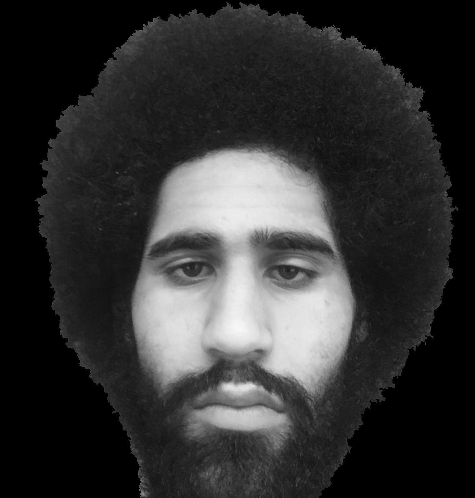
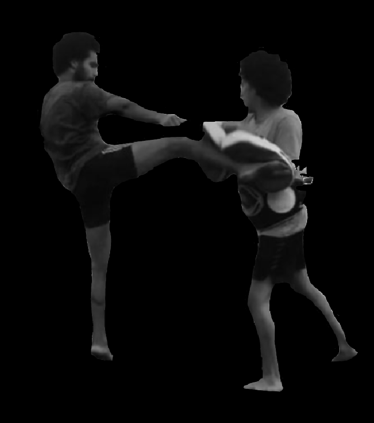

After a few years of fighting professionally I was called over by the youth club that I first started training at and was asked to take over their classes as the main coach. I intensified the classes motivated, the students and brought the training classes up from fitness to more combat based traditional Thai boxing classes. I remained coaching at the youth club for a year and a half then I moved onto kids Thai boxing classes and 1-1 Thai boxing personal training. 2 years later and I am still coaching and fighting.
Muay thai has been a great aspect of my life. From 16 years of age, I started training at a youth club and after a few months, I achieved a knockout in my first fight. Soon after I joined one of the most renowned gyms in the UK, All Powers, and since then I have racked up an impressive record of 12 wins and no losses.
As a personal trainer i have trained both fighters and non fighters of varied ages (juniors and adults) to an excellent rate of customer satisfaction. I have had the pleasure of coaching 5 amateur kick boxers throughout their fight camps which have all won their fights. I've trained a range of different clients (non fighters) from ages 9 to 46. The aims of the sessions were varied from training motor skills and body co-ordination, to simply getting fit and releasing stress and tension. The biggest accomplishment for one of my clients was losing 5 stone in six months, whilst one was to learn how to skip.